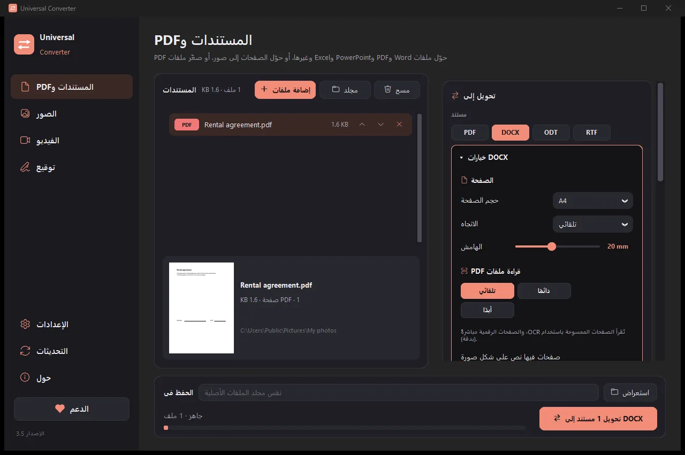

حوّل كشف حساب مصرفي PDF إلى Excel
كشوف الحسابات المصرفية مليئة بالتفاصيل الخاصة، فلا ينبغي رفعها إلى موقع ويب. يقرأ Universal Converter جداول المعاملات على جهازك، بما فيها الكشوف الممسوحة أو المصوّرة، ويُبقي التواريخ والأوصاف والمبالغ في أعمدتها الخاصة، مع حفظ المبالغ كأرقام.
طريقة التثبيت والتحديث
- افتح ملف .dmg المنزّل واسحب Universal Converter إلى مجلد التطبيقات.
- افتح التطبيق. في المرة الأولى يحظره macOS لأنه غير موقّع من Apple: انقر «تم».
- افتح إعدادات النظام > الخصوصية والأمان، ومرّر للأسفل، وانقر «الفتح على أي حال» وأدخل كلمة المرور. تفعل ذلك مرة واحدة فقط.
التحديثات: إذا سمحت بذلك عند فتح التطبيق أول مرة، فإنه يتحقق من الإصدارات الجديدة في كل مرة يبدأ فيها، ويتحقق من توقيعها الرقمي، ويثبّتها عندما تختار.
طريقة التثبيت والتحديث
- انقر «تنزيل لنظام Android» على هاتفك.
- افتح الملف المنزّل. إذا سأل Android، فاسمح للمتصفح أو مدير الملفات بتثبيت التطبيقات.
- انقر «تثبيت».
التحديثات: عند فتح التطبيق يتحقق من وجود إصدار جديد ويخبرك عندما يكون جاهزًا. نزّله بالطريقة نفسها وثبّته فوق القديم؛ تُحفظ إعداداتك.
طريقة التثبيت والتحديث
- نزّل ملف .AppImage.
- اجعله قابلًا للتشغيل: انقر بزر الفأرة الأيمن، ثم الخصائص > الأذونات واسمح بتشغيله كبرنامج (أو في الطرفية: chmod +x Universal-Converter-*.AppImage).
- انقر عليه نقرًا مزدوجًا. لا يُثبَّت شيء: التطبيق هو هذا الملف الواحد.
التحديثات: إذا سمحت بذلك عند أول فتح، يبحث التطبيق عن إصدارات جديدة عند كل تشغيل، ويتحقق من توقيعها الرقمي، ويستبدل ملف AppImage في مكانه.
طريقة القيام بذلك
- افتح Universal Converter.
- اسحب ملفاتك أو مجلدًا كاملًا إلى النافذة، أو انقر «إضافة ملفات».
- اختر Excel (أو CSV). للكشوف الممسوحة، اختر لغة الكشف أو اتركه على تلقائي.
- انقر «تحويل». تُحفظ الملفات الجديدة بجانب الأصول، أو في المجلد الذي تختاره.

لماذا دون اتصال؟
ينجز Universal Converter العمل على جهازك. تبقى ملفاتك خاصة، ولا مشكلة مع الملفات الكبيرة، ويعمل دون اتصال بالإنترنت.
أشياء أخرى يمكنه فعلها
- حوّل PDF إلى Word
- حوّل مستندات Word إلى PDF
- ادمج عدة ملفات في PDF واحد
- ضغط ملف PDF إلى الحجم الذي تختاره
- ضغط ملف PDF إلى 100 كيلوبايت أو 200 كيلوبايت أو أي حجم تطلبه النماذج الإلكترونية
- حوّل صفحات PDF إلى صور JPG
- حوّل مستندًا ممسوحًا إلى ملف Word قابل للتحرير
- حوّل الصور بين JPG و PNG و WEBP وغيرها
- غيّر حجم الصور أو صغّرها إلى حجم ملف معيّن
- تغيير حجم صورة أو توقيع إلى 20 أو 50 كيلوبايت أو أبعاد محددة بالبكسل
- ادمج الصور في ملف PDF واحد
- تحويل JPG إلى PDF بحجم أقل من 100 كيلوبايت
- انسخ النص من صورة (OCR)
- اضغط فيديو دون رفعه
- حوّل الفيديو بين MP4 و MKV و WebM و MOV و AVI
- احفظ صوت فيديو بصيغة MP3
- أنشئ GIF من فيديو
- انقل الجداول من PDF إلى Excel
- استخرج الجداول من فواتير PDF إلى Excel
- توقيع ملف PDF
- ملء نموذج PDF